ゲーム業界向けスクラム入門
〜 NADEC 2010 〜
■はじめに
長久さんが開催したNADEC(仮)で登壇してきました。
CEDECで落ちた話ということで始まっていたので、スクラムの本では得られないポイントについて話してきました。
■スライド
当日講演した内容に、Twitterのコメントの内容などを反映して加筆したものになっています。
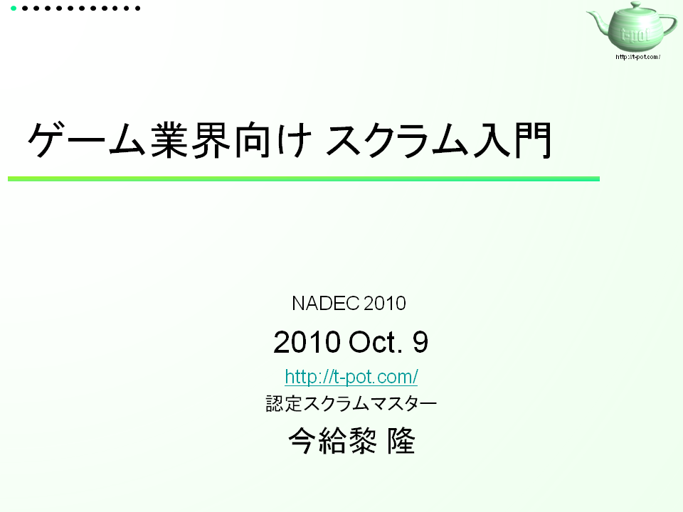
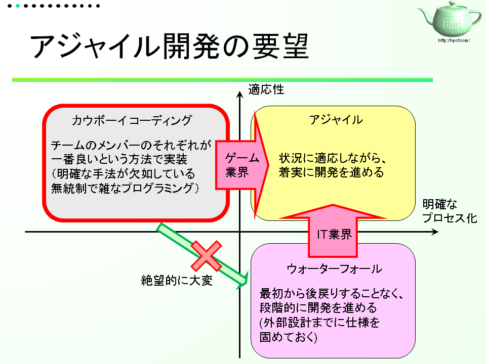
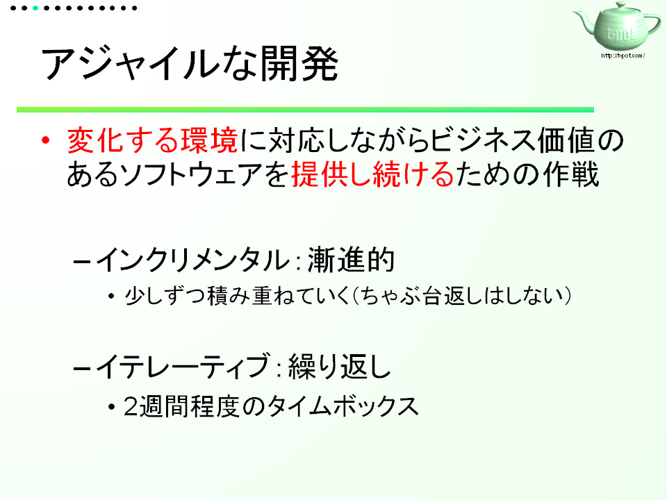
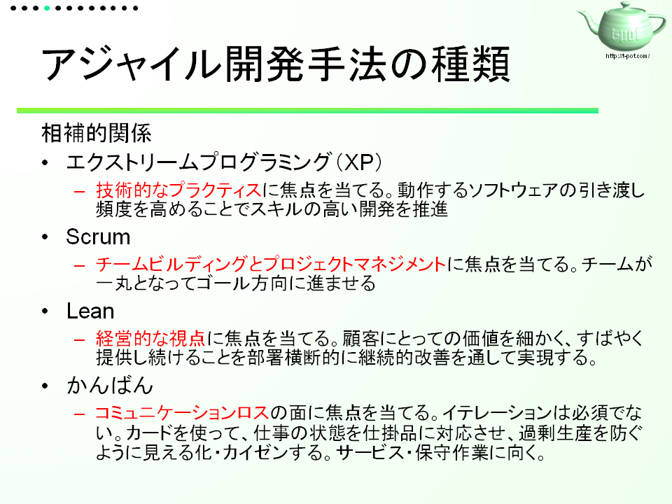
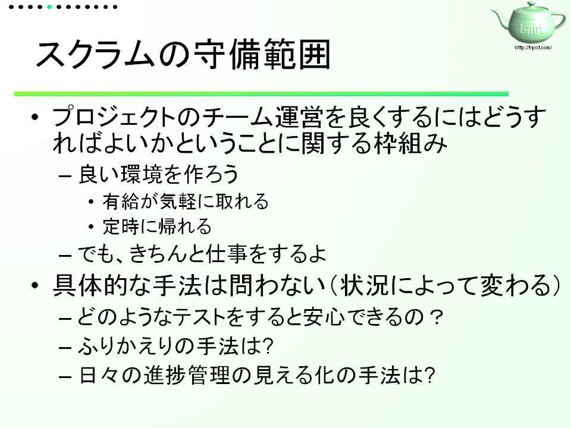
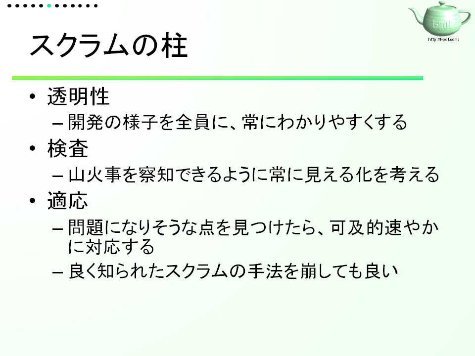

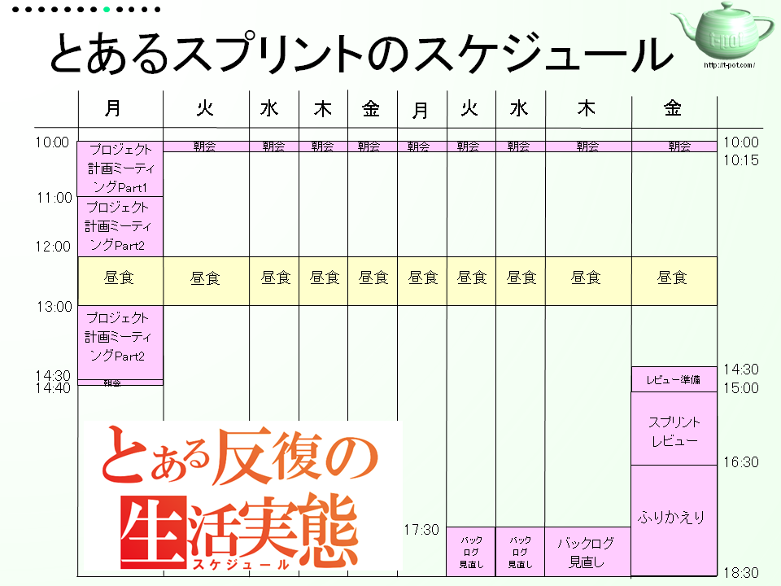
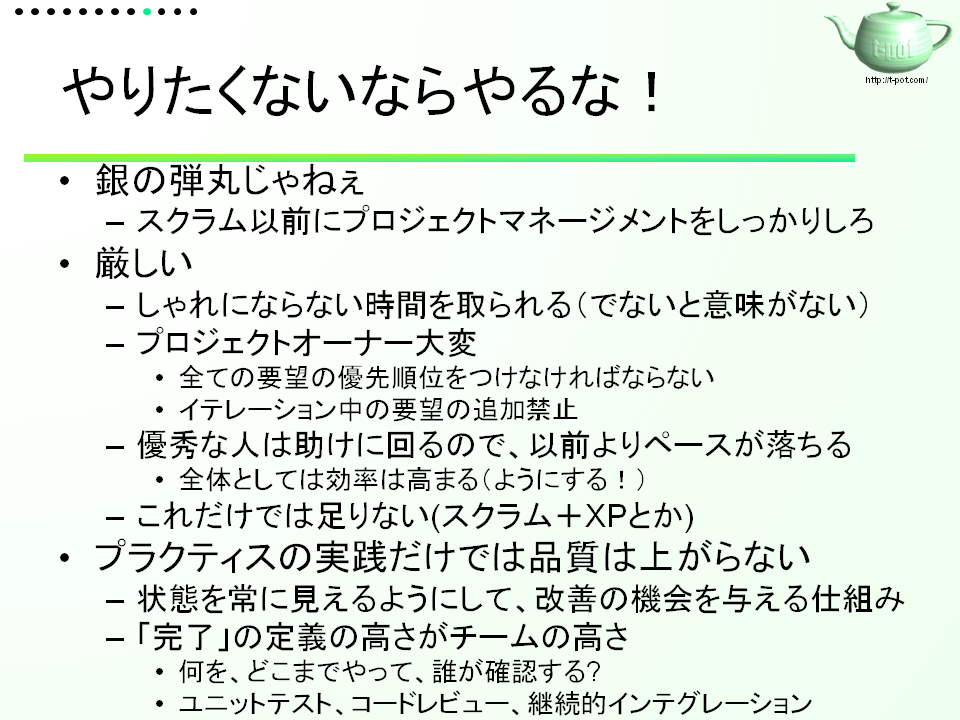
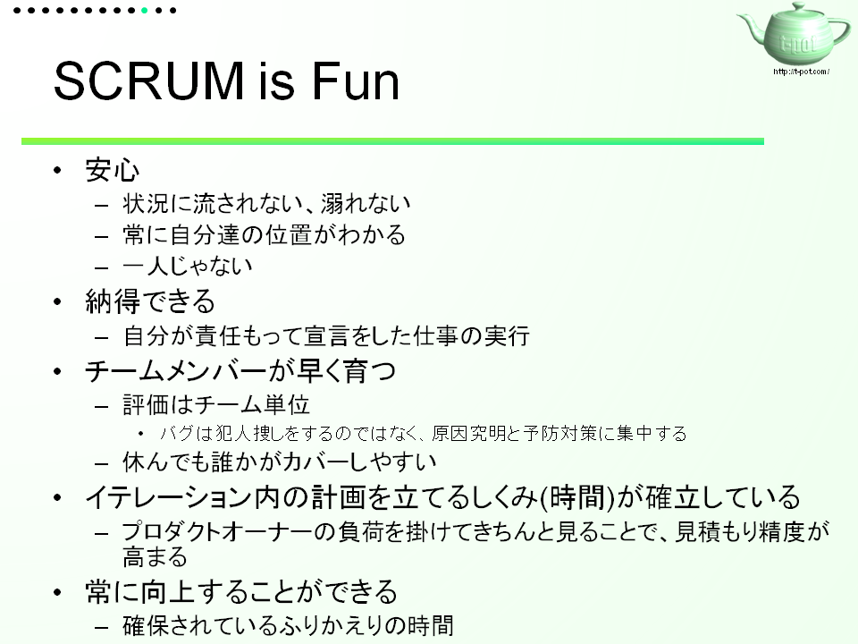
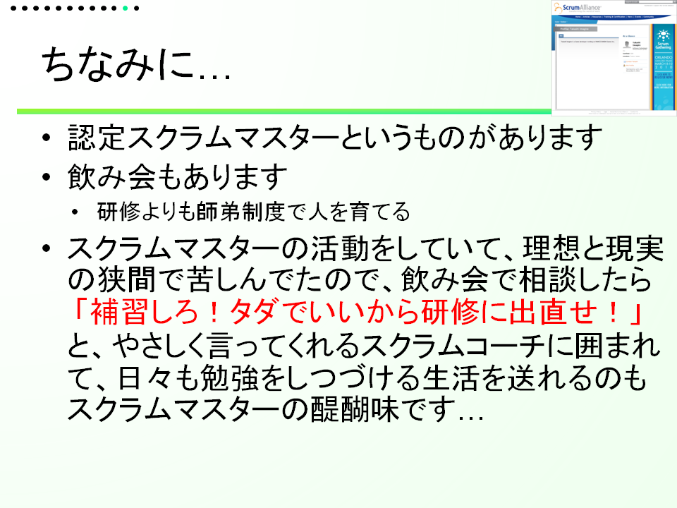
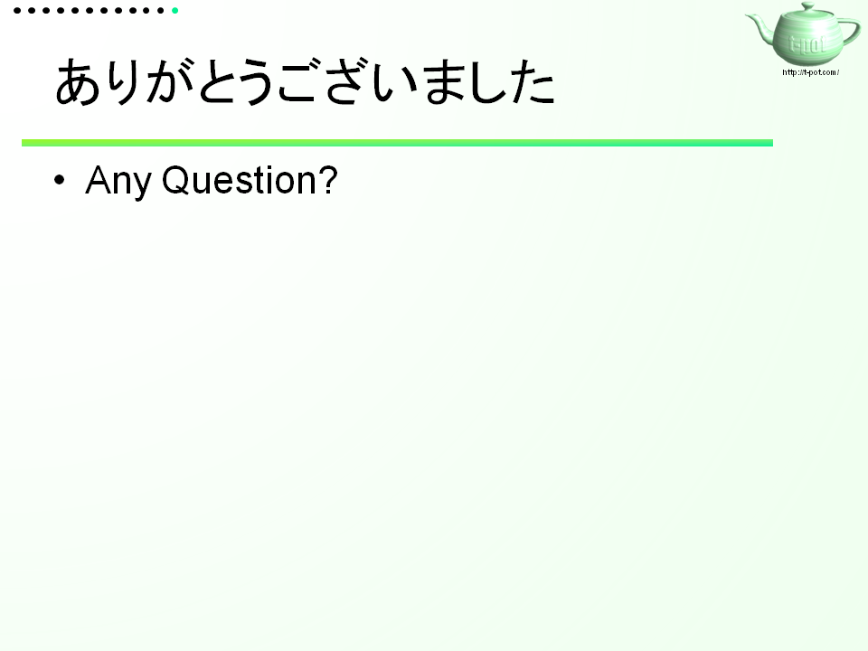
■さいごに
今回は、スクラムのやり方を完全にすっ飛ばしたのですが、時間調整用に資料を準備しとくのって、精神衛生的に良いですね。